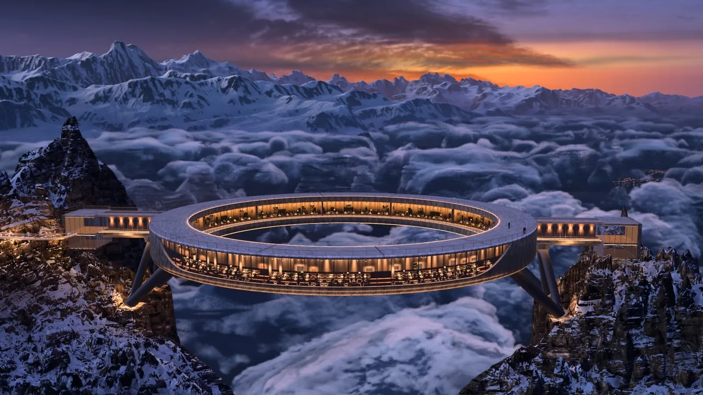
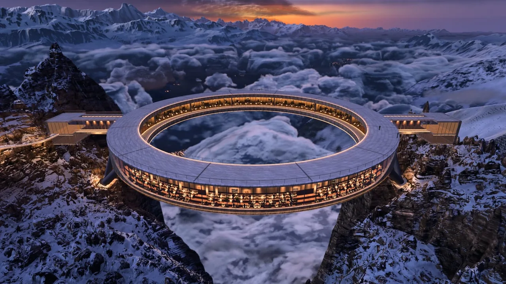
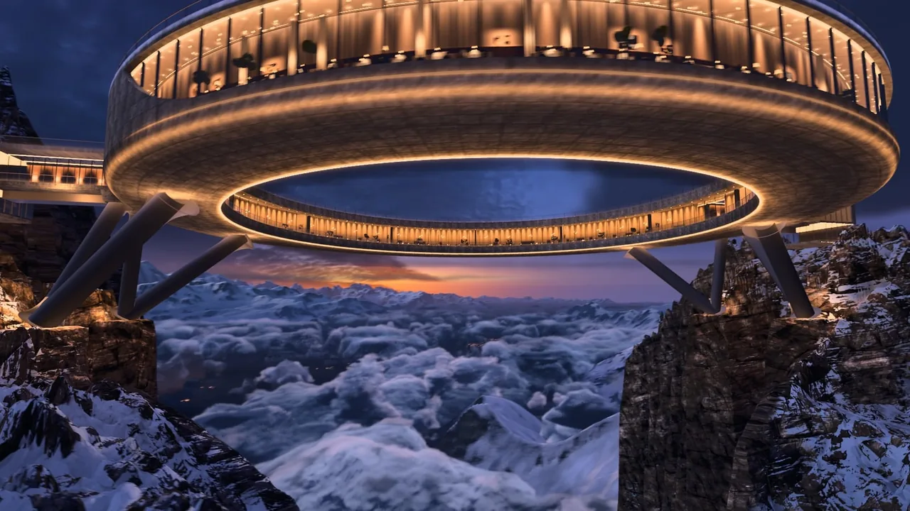
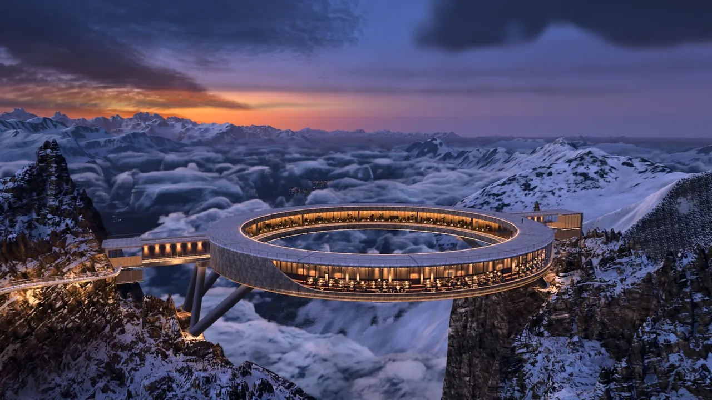

Halo Above the Clouds
云海之上的环形餐厅：真实瑞士高程、光线步进体积云、11.7 万盏村镇灯，Three.js r187 全自写着色器；同一场景还用无头 Chrome 逐帧渲出一部 45 秒无人机短片。据作者称由 Claude Code（Opus 5.5）从 11 张 AI 参考图搭出。

它是什么：一座架在两座雪山尖之间、悬在云海上的环形餐厅，脚下是真实的布里恩茨湖和伯尔尼阿尔卑斯：一个能自由飞的 Three.js 实时场景，外加一部从同一场景逐帧渲出来的 45 秒无人机短片。
好在哪：它把「AI 概念图」真的落成了一个可以飞进去的 3D 世界——云是着色器一步步走出来的、灯是 11.7 万个点、餐厅里连桌布吊灯和食客都在；而且整条管线（烘数据、渲染、后期、剪辑）全部开源，一个外部库都没用。
怎么做到的：
- 先在作者电脑上把真实高程、村镇灯光、云的 3D 噪声、HDRI 天空「烘」成 0.3 GB 的数据包，浏览器只负责画。
- 渲染是 Three.js r187 + WebGL2，全部自写 GLSL：对数深度装下 0.2 米到 240 公里，体积云按半分辨率光线步进再合成，自家 HDR 后期做泛光和胶片曲线。
- 短片用 puppeteer 驱动无头 Chrome 逐帧渲染，每帧叠 8 个子帧得到抗锯齿和运动模糊，剪辑点卡在配乐拍子上；没有用 React、GSAP、模型文件或任何后期库。



完整技术拆解
拆解 · Halo Above the Clouds
- Live: 没有在线演示，要本地跑——
npm install && npm run data && npm run dev（Node 22.12+，WebGL2 显卡；数据包约 0.3 GB 从 GitHub Release 下载） - Film: 45 秒无人机短片（1080p30 MP4，Release v1.0）——每一帧都是从 3D 场景离线渲染的
- Author / 出品: Leon Lin（@Leonxlnx，个人项目，MIT 开源）· 源码 https://github.com/Leonxlnx/halo-above-the-clouds（最近提交 2026-11-02）
- Source: 作者 README 自述「由 Claude Code（Claude Opus 5.5）从 11 张 AI 参考图搭出来，多个智能体并行做地形、岩雪、云、天空、建筑和短片」——源码里没有 Claude / Opus 字样，只有一处注释提到「笔记本同时在跑其它 agents」
- Bundle: 不打包发布，Vite 8 开发服务器直接跑 ES 模块；
src/17 个文件 7,766 行 +tools/25 个文件 4,784 行，其中 GLSL 着色器约 3,400 行，云一个文件 1,353 行 - 证据：本地克隆后逐文件核对
package.json、src/*.js、src/glsl/*.js、tools/*.mjs，对照作者 README
为何选它
它不是又一个「Three.js 小场景」，而是一部完整的渲染管线 + 一部真的拍出来的短片：瑞士布里恩茨湖上空 2,180 米，一座 110 米直径的混凝土环形餐厅架在两座雪山尖之间，脚下是云海，云缝里透出湖边村镇的 11.7 万盏灯，远处是蓝调时刻的伯尔尼阿尔卑斯。地形用的是真实高程数据，天空是真实 HDRI 烘出来的，云是着色器里一步步「走」出来的体积云，餐厅里连桌布、吊灯、坐着的食客都是代码摆的。最有意思的是它的工作方式：从 11 张 AI 生成的概念图出发，把「图里那种感觉」反向工程成一个可以自由飞的 3D 世界，再用无头 Chrome 一帧一帧渲染 1,350 帧，配乐卡拍剪辑。对正在想「AI 概念图怎么落成真场景」的人，这是目前最完整的公开样本。
实际在源码里找到的技术栈
three ^0.187.0；WebGLRenderer 关了 MSAA 自己做抗锯齿、开了 logarithmicDepthBuffer（相机近裁 0.2 m、远裁 600 km，一个深度缓冲要同时装下桌上的蜡烛和 240 km 外的山）；云的噪声是 Data3DTexture，这是 WebGL2 才有的 3D 纹理ShaderMaterial 遍布每个模块：岩石雪面 982 行、建筑 1,208 行、远山大气 517 行、公共大气/噪声 537 行、湖水 177 行；没有 pmndrs postprocessing、N8AO、takram 这些现成库src/post.js场景画进 HalfFloat 渲染目标（4x MSAA）→ 云 → 多级 mip 泛光金字塔（软阈值 1.5，只让灯和高光发光）→ 胶片曲线（曝光 0.69、脚趾 toe 0.06、肩部 shoulder 0.6、对比、饱和、白平衡 1.12/1/1.08、暗角 0.12、颗粒 0.005）src/clouds.js每个像素最多走 420 步粗步 + 第一次碰到云时回退改走 400 步细步；形状 / 细节 / 卷云 / 涡旋 4 个 3D 噪声体 + 512² 天气图；按风向 2.5 m/s 整体漂移；README：短片半分辨率、交互版四分之一分辨率，再合成回全屏tools/skybake.mjs 把两张 Poly Haven CC0 HDRI（Belfast Sunset、Cedar Bridge Sunset）烘成 sky.png；太阳方位 214°、仰角 −4°（在地平线下，所以是蓝调时刻）；加载失败时退回解析天空THREE.Pointssrc/lights.js：村镇和道路的钠灯 / LED 全是点精灵；镜像一份画进反射渲染目标，湖面着色器读它画出拉长的灯影；每第 3 盏灯还在镇子下面铺一片光污染；湖水反射时沿 125 m 粗高程图步进，倒影能撞到山坡src/structure.js 985 行：外径 55 m、内径 42.6 m 的环、屋顶平台、玻璃餐厅、内露台、V 形斜撑、两座桥和玻璃亭；桌布、椅子、沙发、台灯、吊灯、天花射灯、坐着的食客全是 InstancedMesh；LED 是细的自发光环，窗光用 24 个解析灯（uLampPos/uLampCol）直接照在混凝土上src/timeline.js11 个镜头、45 s、30 fps = 1,350 帧；路径是单调三次样条，FPV 镜头的侧倾按真实公式 roll = atan(a_lat / g) 从加速度算出来；每个剪辑点都落在配乐「Uprising」（Scott Buckley，CC BY 4.0，60 BPM 3/4 拍）的拍点上；开头 0.6 s 淡入、结尾 1.8 s 淡出tools/render.mjs：每帧渲染 K=8 个抖动子帧取平均，一次拿到抗锯齿 + 运动模糊（快门 0.5 帧）；README：笔记本 Radeon 780M 核显上约 5 s/帧，全片约 2 小时；支持断点续渲、GPU 锁文件；最后 ffmpeg libx264 合成src/views.js：11 个参考机位，用 CPU 上的 Nelder-Mead 优化去拟合参考图里环的轮廓；注释直说「AI 参考图的透视彼此不一致」，所以机位是折中的tools/terrain.mjs 一句注释「笔记本同时在跑其它 agents」，以及 config 里成堆的 r5 / r8 / r9 p2 这类「第几轮调参」注释作为旁证核心效果怎么工作（大白话 + 标明推测）
1. 先把世界「烘」成数据，浏览器只负责画（确认：tools/ + fetch-data.mjs）
和 Procedural Tokyo 一样的思路：重活在作者电脑上做完。tools/ 里 25 个脚本把真实高程拉下来、雕出两座山尖、烘好每个顶点的天空可见度和阴影、生成云的 3D 噪声体、把 HDRI 烘成天空图——这些结果打成 0.3 GB 的包放在 GitHub Release。网页打开时只加载这些现成数据，GPU 专心画。
2. 云海是「走」出来的（确认：clouds.js）
云没有模型。每个像素从相机发一条光线往前走，每走一步就查 3D 噪声：这里有多浓的云？沿途累加浓度和光照，走到不透明为止。第一次碰到云时会退一步改小步走，所以云的轮廓是脆的不是糊的。为了省算力，云只按半分辨率甚至四分之一分辨率算，再放大合成回去；渲染短片时 8 个子帧各走不同的像素相位，拼出来相当于全分辨率。布里恩茨湖上方特意「挖」了一条云缝，让湖边的灯能从云底透出来。
3. 2,180 米高的餐厅，桌上有蜡烛（确认：structure.js + config.js）
环的尺寸、桥、玻璃亭、斜撑全是代码按米数拼的基础几何体，餐厅内部按半径一圈圈摆：48 m 处是靠窗桌、52.75 m 处是廊桌，每张桌一个台灯，沙发区、艺术画、坐着的食客都是实例化批量画；离相机 9 m 以内的食客会被跳过，免得露馅。灯光不是真光源：把 24 盏灯的位置和颜色塞进着色器，混凝土自己算被照亮多少。
4. 一个场景装下 0.2 米到 240 公里（确认：main.js + terrain.js）
普通深度缓冲在这么大的跨度下会「打架」，所以开了对数深度。地形是套娃式的 7 层网格：远处一圈圈极坐标顶点、近处越来越密，环旁边一格只有 39 厘米。远山的蓝灰色和暮色渐变在 far.js 里按大气透视算。
5. 11.7 万盏灯一次画完，还带湖面倒影（确认：lights.js）
所有村镇灯是一个点云对象。倒影的做法很巧：把同一堆点镜像到水面下，画进一张单独的贴图，湖水着色器读这张图把灯拉成一条条竖的光痕——不用真的做反射。
6. 短片是「飞」出来再「拍」的（确认：timeline.js + render.mjs）
镜头路径写在代码里，相机侧倾按飞行器的物理公式算，剪辑点对齐音乐的拍子。渲染时用 puppeteer 开一个无头 Chrome 逐帧请求，每帧叠 8 个带抖动的子帧，既抗锯齿又自带运动模糊。慢，但在核显笔记本上两小时跑完。
7. 从 AI 参考图到 3D（确认：views.js + matte.js；工作流细节 = 推测）
11 张 AI 概念图被当成「客户参考」：代码里有 11 个对应机位，用优化算法拟合图中环的轮廓；matte.js 还能把参考图投影到远景上做静帧对比（参考图不在仓库里，所以默认跳过）。config 里一层层的「r8 p2：改成 0.38，之前 0.56 太实」这类注释，推测就是多轮「渲一帧 → 对照参考图 → 调参」留下的痕迹。
8. 伪代码（忠实于源码符号与 README）
offline (tools/*.mjs, author's machine):
AWS Terrain Tiles → terrain.mjs (sculpt pinnacles, bake AO / sky / key shadow)
fardem / farmid / farsummit / farkey → nested DEM levels to 240 km
lights.mjs → 117k village + road lamps noise3d / billow / curl → cloud volumes
skybake.mjs (2 Poly Haven HDRIs) → sky.png → halo-data.tar.gz (Release v1.0, ~0.3 GB)
browser (src/, Vite dev server, three r187, WebGL2):
renderer: logarithmicDepthBuffer, HalfFloat sceneRT (4x MSAA), linear output
sky dome (photo) → terrain levels (rock/snow GLSL) → ring + interior (InstancedMesh)
→ lights (Points + mirrored reflection RT) → clouds (raymarch, Data3DTexture, half/quarter res)
→ post: bloom pyramid → filmic tone (toe / shoulder) → grade → vignette → grain
film (tools/render.mjs → puppeteer-core → headless Chrome):
for f in 0..1349: t = f / 30; cameraAt(t) (11 shots, bank = atan(a_lat / g))
K = 8 jittered sub-frames, shutter 0.5 → accumulate → toDataURL(jpg)
ffmpeg libx264 + "Uprising" (45 s, cuts on beats)
not found: React, GSAP, GLTFLoader, WebGPU, postprocessing, "Claude" / "Opus" strings如果我来重做（学习向，非版本承诺）
- 先只做「环 + 云海 + 蓝调天空」：一个 TorusGeometry 当环，发光的 LED 用自发光材质；云海先用一张大平面 + 噪声 alpha 贴图糊弄过去，天空用渐变色。
- 把云海换成真正的光线步进：在一个全屏着色器里对一层「云板」做 32 步步进，噪声用 2D 纹理叠几层代替 3D 纹理，先出轮廓再谈细节。
- 加 UnrealBloomPass 和一个简单的 toe / shoulder 色调曲线，灯一亮就有「电影感」。
- 地形先用 PlaneGeometry + 噪声抬高，再考虑用真实高程（Mapzen 的 terrarium 瓦片一张 PNG 就能解码）。
- 最后做相机路径：CatmullRomCurve3 + 按键播放，侧倾按 atan(a_lat / g) 算，一下就不像「在 Three.js 里转圈」了。
自己试试（复制给 Grok 4.7 / Opus 5.5 / Astra）
请帮我用 Three.js 做一个「云海之上的环形餐厅」场景，单个 index.html，手机和电脑都能打开。
要求：
- 蓝调时刻：天空用上深蓝下橙紫的渐变穹顶（BackSide 球体 + 简单着色器），太阳在地平线下
- 一个 TorusGeometry 环（半径 55、管径 6）悬在场景中央，环上一圈细的自发光 LED 线，环下两根斜撑柱
- 地形：PlaneGeometry 用两层噪声抬高，高处刷白当雪、低处刷深灰当岩石
- 云海：在环下方 40 单位处放一个大平面，用全屏片元着色器做 32 步光线步进的体积云，噪声用两张 2D 噪声纹理叠加；给中间留一条云缝
- 云缝下面撒 3000 个 Points 当村镇灯光，暖黄色，随机大小
- 后期加 UnrealBloomPass，再加一个简单的 toe/shoulder 色调曲线（ShaderPass）
- 按 V 键播放一条 CatmullRomCurve3 相机路径（30 秒，从远处推进、绕环一圈、穿过环中央），转弯时相机按 atan(侧向加速度 / 9.8) 自动侧倾
- 鼠标/手指拖动旋转视角，滚轮/双指缩放
- 代码 300 行以内，每段写中文注释，最后告诉我改哪几个数字效果变化最明显图片来自作者仓库 docs/（MIT）。高程：AWS Terrain Tiles（Mapzen / Tilezen，含 EU-DEM 等）；纹理与天空 HDRI：Poly Haven（CC0）；短片配乐：Scott Buckley「Uprising」（CC BY 4.0）。
设计雷达 · 每天 8 个值得看的网站、App UI 和网页小游戏